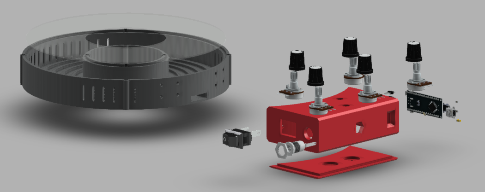

RGBW Ring Light
This project was made as a result of a friend asking if I could help him make a ring light. The project started as a simple ring light that would use two LED strips of different color temperatures along with two dimmer switches to adjust the intensity of each. While throwing options back and forth I casually offered up the idea of an RGBW ring light expecting him to say no, but he said yes. Having no clue how I would make it happen I told him I could do it.
Feasibility and Testing
After printing a layout template that would let me test the fit and solder the LEDs together in the right position, the next step was to move on to the software. I wanted to make sure this was something I could do. I started testing with the smaller led rings that came from the center of the larger rings. This was primarily for ease of testing as the LEDs can draw a high amount of current at full brightness. I had no idea how I was going to interface with the ring, but I knew it had to be something simple so he could operate it without my help. After doing some testing and layout sketches, I decided to go with 5 knobs. One for adjusting brightness, color temperature, as well as red, green, and blue independently. This might sound like a lot of knobs, but it seemed like the simplest way to provide quick adjustment with save states when turning on the light.
Designing the Enclosure
When designing the enclosure one of the main priorities was to not model myself into a box by designing something that was not printable in the first place. One of the ways that I made sure of this was by designing the enclosure in two main parts that could later be screwed together. Another consideration when modeling was heating, based on some testing I found that the LEDs could pull a theoretical peak of ~50 watts. This was dealt with by putting plenty of vent holes around the perimeter of the ring to ensure the opportunity for convection. To print as few prototypes as possible, I tried to do as much of the fit testing as I could in Fusion. This was super easy thanks to a site called GrabCad that allowed me to import models such as the Arduino and potentiometers. After checking the model, sleeping on it, and checking again it was finally time to print.
Final Assembly and V2
Assembly was pretty straight forward, though it was a bit cramped will all of the wires inside such a small box. After I had finally passed it off to my friend it left me wanting one for myself. Lucky for me I had to order two LED rings in the first place, one for each color temperature. So I already had the parts waiting to be assembled. Since this version was going to be built for me I could now build it to my requirements, some of which was eliminating the knobs in favor of WI-FI, and reducing the print time and assembly complexity. This version ended up looking a bit more prototype-esque than the first, but that was okay with me as it met both of my goals. The ring itself is controlled using an awesome program called Blynk that allows you to control a number of variables in the code with a sleek app. Overall this project was a ton of fun and I would do it again in a heartbeat.